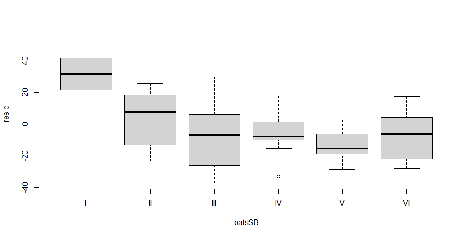
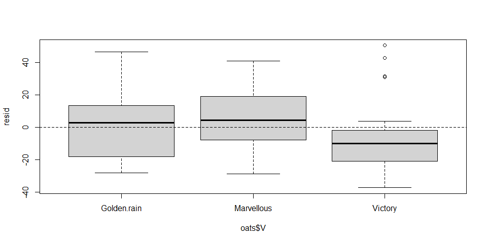
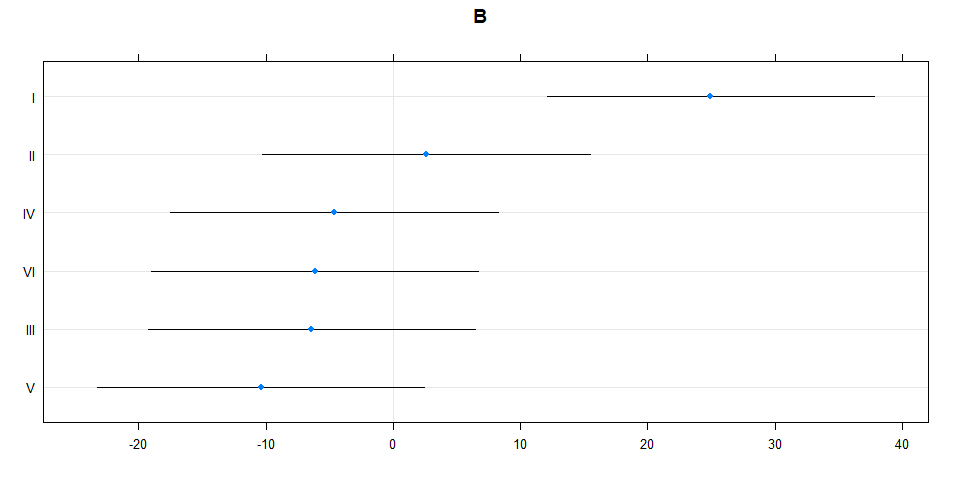
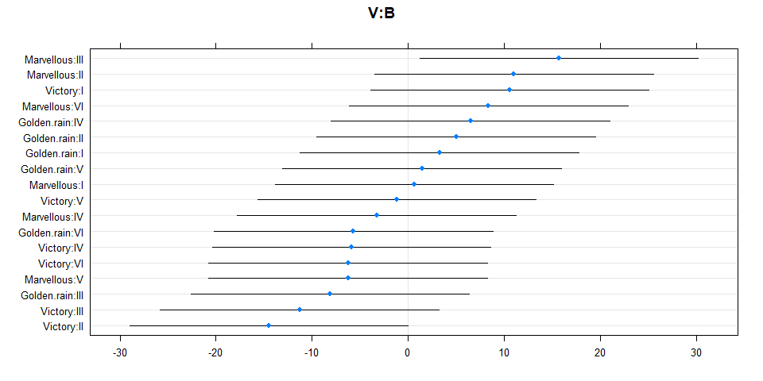
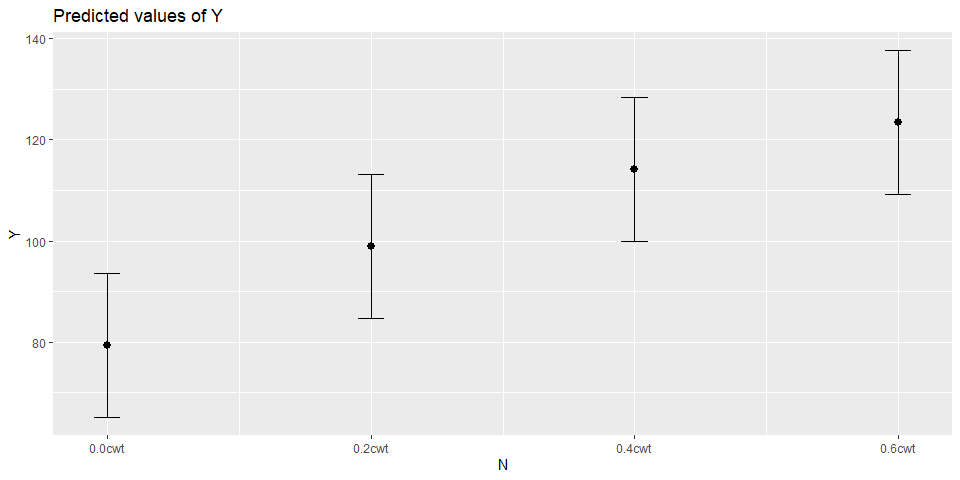
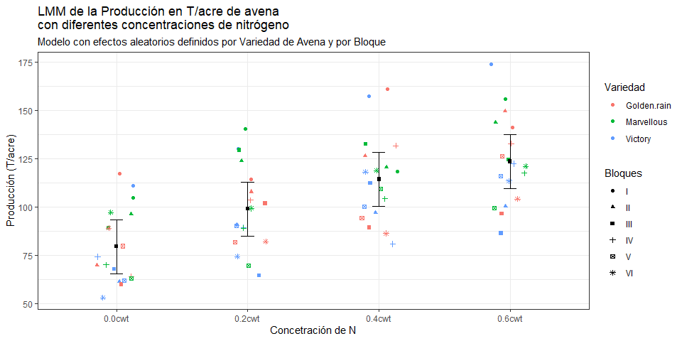
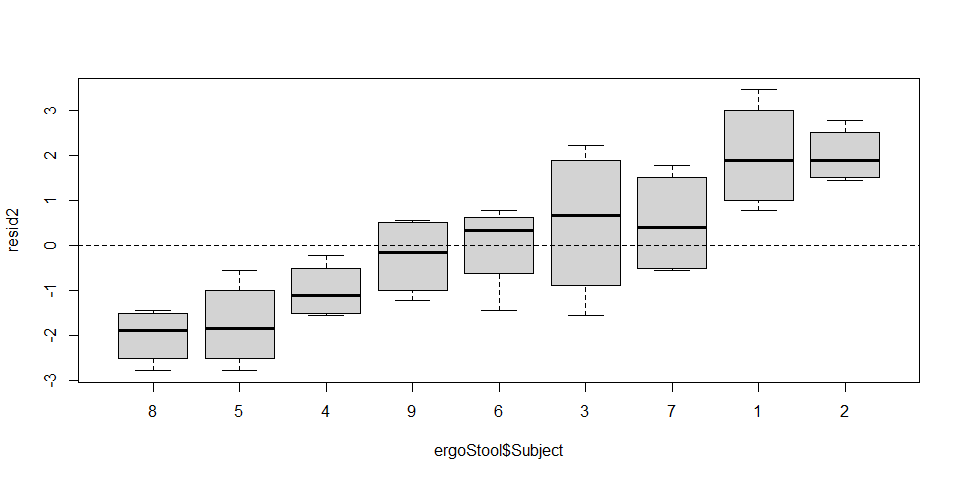
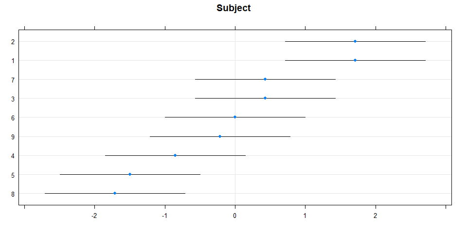
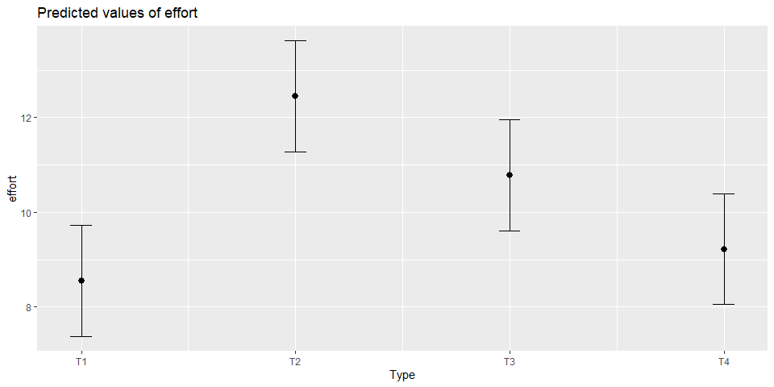
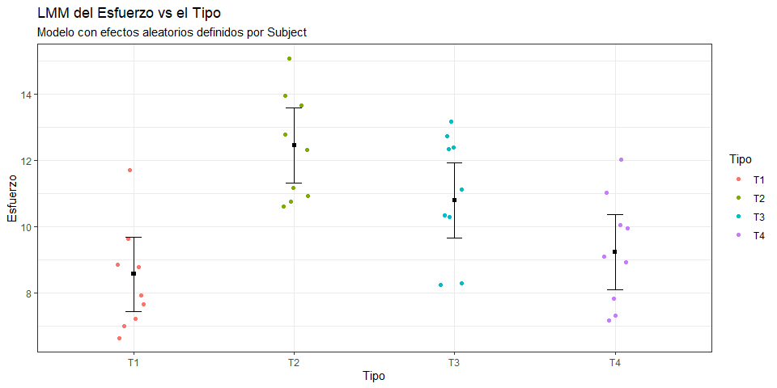

Link de la práctica desarrollada: Práctica de Casa 05 - Gráficos Avanzados con ggplot2 (irwingss.github.io)
Realiza los siguientes ejercicios durante tu tiempo libre para reforzar practicar las funciones adicionales y geoms que aprendiste durante la semana 12 del programa (Curso 5).
Recuerda realizar esta práctica luego de haber desarrollado:
En clase realizamos los gráficos y resultados para el caso donde la variable X es numérica. Estos dos ejercicios te proveerán de la práctica necesaria para problemas de investigación donde la variable explicativa no es numérica sino categórica.
Nota 1: Si necesitas crear un code chunk los atajos en el teclado son en WINDOWS:
Crtl+Alt+i, y en MAC:Command+Alt+i.
Activa las librarías a usar
library(tidyverse)
library(forcats)
library(car)
library(MuMIn)
library(sjPlot)
library(ggeffects)
library(glmmTMB)
library(lme4)
library(AICcmodavg)
library(broom)
library(broom.mixed)Carga la base de datos oats de la librería MASS.
# Carga la base de datos oats de la libreria MASS
library(MASS)##
## Attaching package: 'MASS'## The following object is masked from 'package:patchwork':
##
## area## The following object is masked from 'package:rstatix':
##
## select## The following object is masked from 'package:dplyr':
##
## selectdata("oats")
# Usa la función head para ver las seis primeras filas del data frame
head(oats)## B V N Y
## 1 I Victory 0.0cwt 111
## 2 I Victory 0.2cwt 130
## 3 I Victory 0.4cwt 157
## 4 I Victory 0.6cwt 174
## 5 I Golden.rain 0.0cwt 117
## 6 I Golden.rain 0.2cwt 114Las variables de esta base de datos son las siguiente:
Y: rendimiento de la producción en toneladas por acre.
N: Tratamiento de nitrógeno (estiércol, 3 niveles), 0.0cwt, 0.2cwt, 0.4cwt y 0.6cwt.
V: Variedad de avena (3 niveles), Victory, Golden.rain y Marvellous.
B: Bloques, niveles I, II, III, IV, V y VI.
El objetivo de este ejercicio es encontrar la relación que existe entre el uso de diferentes niveles de nitrógeno y diferentes variedades de avena en el rendimiento final de las parcelas de estudio (producción por acre). Se determinó un estudio por bloques ya que la zona es irregular y las micro-características de cada bloque podrían influenciar en ligeras variaciones en la producción. Se desea remover este efecto aleatorio y quedarse con la explicación de N y V sobre la variable respuesta Y.
# Ver normalidad de la variable respuesta
nortest::ad.test(oats$Y)##
## Anderson-Darling normality test
##
## data: oats$Y
## A = 0.23768, p-value = 0.7759# Ver Posible efecto aleatorio (experimentar con N*V)
lm <- lm(Y ~ N, data = oats)
resid <- residuals(lm)
boxplot(resid ~ oats$B)
abline(0,0, lty=2)
boxplot(resid ~ oats$V)
abline(0,0, lty=2)
# Modelo lineal (nómbralo ModV) explicado solo por la variedad (V).
ModV <- lm(Y ~ V, data=oats)
# Modelo lineal (nómbralo ModN) explicado solo por el nitrógeno (N).
ModN <- lm(Y ~ N, data=oats)
# Modelo lineal (nómbralo ModVN) explicado solo por la interacción entre N y V.
# Una interacción la colocarás como la multiplicación entre las variables: N*V.
ModVN <- lm(Y ~ V*N, data=oats)
# LMM (nómbralo Mod1) explicado por la variedad (V), y controlando por
# bloques (B) como interceptos aleatorio.
Mod1 <- lmer(Y ~ V + (1|B), data=oats, REML=FALSE)
# LMM (nómbralo Mod2) explicado por el nitrógeno (N), y controlando por
# bloques (B) como interceptos aleatorio.
Mod2 <- lmer(Y ~ N + (1|B), data=oats, REML=FALSE)
# LMM (nómbralo Mod3) explicado la interacción N*V, y controlando por
# bloques (B) como interceptos aleatorio.
Mod3 <- lmer(Y ~ V*N + (1|B), data=oats, REML=FALSE)
# Copia los modelos Mod1 al Mo3, cámbiales los nombres por Mod4, Mod5, y Mod6,
# y esta vez define los interceptos aleatorios como un anidamiento de
# Variedad dentro de Bloque (B/V).
Mod4 <- lmer(Y ~ V + (1|B/V), data=oats, REML=FALSE)## boundary (singular) fit: see ?isSingularMod5 <- lmer(Y ~ N + (1|B/V), data=oats, REML=FALSE)
Mod6 <- lmer(Y ~ V*N + (1|B/V), data=oats, REML=FALSE)En la selección de modelos, este código para revisar el criterio de información (sea AIC, AICc o BIC) es mucho más cómodo y corto. La función lst() de la librería tibble permite realizar una lista y automáticamente nombrar cada elemento con el nombre del objeto. Algo que la función típica list() no hace. Esta lista contiene los propios modelos (no solo sus nombres), por lo que les podemos aplicar, por ejemplo, el cálculo del AICc, con la función lapply() que permite aplicar una función a una lista. Prueba cambiando la función aplicada sobre la lista por AIC, BIC, o calcula los coeficientes de cada elemento con coef(), revisa el resumen de cada elemento con summary().
# Selección de modelos
Lista <- tibble::lst(ModV, ModN, ModVN, Mod1, Mod2, Mod3, Mod4, Mod5, Mod6)
lapply(Lista, AICc)## $ModV
## [1] 684.3151
##
## $ModN
## [1] 654.1299
##
## $ModVN
## [1] 670.5844
##
## $Mod1
## [1] 675.2818
##
## $Mod2
## [1] 627.6604
##
## $Mod3
## [1] 640.4679
##
## $Mod4
## [1] 677.665
##
## $Mod5
## [1] 616.9145
##
## $Mod6
## [1] 634.4771# Si pasamos la lista de AICc con un pipe por la función %>% sapply(cbind)
# obtendremos un vector con los elementos nombrados.
# Esto lo pasamos a su vez por la función sort() para que se reordenen.
lapply(Lista, AICc) %>% sapply(cbind) %>% sort()## Mod5 Mod2 Mod6 Mod3 ModN ModVN Mod1 Mod4
## 616.9145 627.6604 634.4771 640.4679 654.1299 670.5844 675.2818 677.6650
## ModV
## 684.3151# Aplica la función r.squaredLR para calcular el R cuadrado ajustado por
# el método de Likelihood Ratio Test. Este test me da un resultado comparable
# con el R2 de un modelo lineal clásico. Recuerda que me indica la fuerza de la
# relación entre Y y la parte sistemática de la ecuación (es decir, las
# variables X). Esto se interpreta también como la cantidad de varianza que
# las variables X explican de Y. Aquí la función sort() nos daría
# el resultado comenzando con el valor más bajo, pero queremos saber cuál
# es el más alto, por lo que en su lugar usaremos rev().
lapply(Lista, r.squaredLR) %>% sapply(cbind) %>% rev()## Mod6 Mod5 Mod4 Mod3 Mod2 Mod1 ModVN
## 0.68128923 0.65714005 0.17513970 0.63788024 0.58813083 0.17513970 0.42566527
## ModN ModV
## 0.38511371 0.03436239En este punto tenemos que por AIC, los mejores modelos son Mod5, Mod2 y Mod6, y que estos modelos tienen buenos R2 ajustado por LR: 0.66, 0.59, 0.68 respectivamrnte. La decisión la debes basar en el AIC. Revisa si existen diferencias significativas entre los modelos y escoge - Si existen diferencias significativas, el que tenga menor AIC. - Si no existen diferencias significativas, el que tenga la menor cantidad de parámetros (npar). - Y si todo está idéntico entre los modelos, es decir, no hay diferencias significativas y no hay diferencia en el número de parámetros, puedes escoger o el más sencillo (con fórmula más simple) o el que tiene mejor RsquaredLR.
anova(Mod5, Mod2) ## Data: oats
## Models:
## Mod2: Y ~ N + (1 | B)
## Mod5: Y ~ N + (1 | B/V)
## npar AIC BIC logLik deviance Chisq Df Pr(>Chisq)
## Mod2 6 626.37 640.03 -307.18 614.37
## Mod5 7 615.16 631.10 -300.58 601.16 13.204 1 0.0002794 ***
## ---
## Signif. codes: 0 '***' 0.001 '**' 0.01 '*' 0.05 '.' 0.1 ' ' 1# existen diferencias sig. Gana Mod5
anova(Mod5, Mod6) ## Data: oats
## Models:
## Mod5: Y ~ N + (1 | B/V)
## Mod6: Y ~ V * N + (1 | B/V)
## npar AIC BIC logLik deviance Chisq Df Pr(>Chisq)
## Mod5 7 615.16 631.10 -300.58 601.16
## Mod6 15 625.91 660.06 -297.95 595.91 5.2587 8 0.7296# no existen diferencias sig. Gana Mod5 por menor npar
anova(Mod2, Mod6) ## Data: oats
## Models:
## Mod2: Y ~ N + (1 | B)
## Mod6: Y ~ V * N + (1 | B/V)
## npar AIC BIC logLik deviance Chisq Df Pr(>Chisq)
## Mod2 6 626.37 640.03 -307.18 614.37
## Mod6 15 625.91 660.06 -297.95 595.91 18.462 9 0.03017 *
## ---
## Signif. codes: 0 '***' 0.001 '**' 0.01 '*' 0.05 '.' 0.1 ' ' 1# existen diferencias sig. Gana Mod2, pero este no es mejor que mod5Nos quedamos con Mod5. Continua el ejercicio para obtener el modelo final: Y siendo explicado por N y retirando el efecto aleatorio de bloques y variedades.
# Guarda el modelo Final (nómbralo final) con REML verdadero
final <- lmer(Y ~ N + (1|B/V), data=oats, REML=TRUE)
# Ahora, los gráficos de Gusano (Caterpilar Plot) de los efectos aleatorios
# que vimos en clase es mejor obtenerlos con la función descrita a continuación
library(lattice)
cater <- dotplot(ranef(final, condVar=TRUE), strip=FALSE)
# Visualiza el efecto de los bloques con su nombre B
cater$B
# Visualiza el efecto de las variedades anidadas en los bloques con
# su nombre `V:B`
cater$`V:B`
# Obtén los CI Automáticos para que veas si los intervalos de confianza
# incluyen o no a 0 y sepas si es que los coeficientes de las categorías
# de N son significativos.
final %>% tidy(conf.int=TRUE) %>% View()
# Revisa los resultados del modelo. Recuerda que nos interesa interpretar
# los efectos fijos del modelo. Estos se leen como en una regresión
# lineal cualquiera.
summary(final)## Linear mixed model fit by REML ['lmerMod']
## Formula: Y ~ N + (1 | B/V)
## Data: oats
##
## REML criterion at convergence: 582.2
##
## Scaled residuals:
## Min 1Q Median 3Q Max
## -1.78156 -0.61169 0.02222 0.62201 1.68138
##
## Random effects:
## Groups Name Variance Std.Dev.
## V:B (Intercept) 121.9 11.04
## B (Intercept) 210.4 14.51
## Residual 162.6 12.75
## Number of obs: 72, groups: V:B, 18; B, 6
##
## Fixed effects:
## Estimate Std. Error t value
## (Intercept) 79.389 7.132 11.131
## N0.2cwt 19.500 4.250 4.588
## N0.4cwt 34.833 4.250 8.196
## N0.6cwt 44.000 4.250 10.353
##
## Correlation of Fixed Effects:
## (Intr) N0.2cw N0.4cw
## N0.2cwt -0.298
## N0.4cwt -0.298 0.500
## N0.6cwt -0.298 0.500 0.500Interpretación: el modelo LMM indica que si existe un efecto aleatorio de bloque y de variedad anidada dentro de bloques (como indican los caterpilar plots) y la cantidad de varianza explicada por estas variables de efecto aleatorio revisado en el summary del modelo. Por su parte, la interpretación de los efectos fijos (todos ellos significativos dado que los CI no incluyen al cero) nos indica que el mejor rendimiento se genera por N0.6cwt, con un incremento de 44 unidades sobre el promedio del nivel base (el cual en este caso es N0cwt, es decir, no aplicación de nitrógeno). En general aplicando N0.6cwt puedo producir un promedio de 44.000 + 79.389 = 123.389 toneladas por acre.
El gráfico de efectos fijos, o predictivo, lo podemos generar rápidamente con la función plot_model() de la librería sjPlot.
library(sjPlot)
plot_model(final, type="eff")## $N
No obstante, la versión en ggplot2, más elaborada, requiere de obtener la información de los coeficiente e intervalos de confianza para crear las barras de error de cada coeficiente para cada nivel de Nitrógeno.
# Genera el modelo final donde el intercepto (nivel báse de la variable N,
# que es la misma categoría 0.0cwt) se muestre como nivel y no como intercepto.
# Esto se logra colocando un número 0 antes de la variable X en la fórmula.
final.para.grafico<- lmer(Y ~ 0+N + (1|B/V), data=oats, REML=TRUE)
# Obtener los coeficientes para ambos efectos aleatorios B y V anidado en B
coef.B <- as.data.frame(broom.mixed::tidy(final.para.grafico, conf.int=TRUE))[1:4,]
coef.B$term <- unique(oats$N)
# Generar el gráfico
ggplot()+
geom_jitter(data=oats, aes(x=N, y=Y, color=V, shape=B), width=0.15)+
geom_point(data=coef.B, aes(x=term, y=estimate), shape=15)+
geom_errorbar(data=coef.B, aes(x=term, ymin = conf.low, ymax = conf.high),
width = 0.1)+
theme_bw()+
labs(title="LMM de la Producción en T/acre de avena \ncon diferentes concentraciones de nitrógeno",
subtitle="Modelo con efectos aleatorios definidos por Variedad de Avena y por Bloque",
x="Concetración de N", y="Producción (T/acre)", color="Variedad", shape="Bloques")
Carga la base de datos ergoStool de la librería nlme.
# install.packages("nlme")
library(nlme)##
## Attaching package: 'nlme'## The following object is masked from 'package:lme4':
##
## lmList## The following object is masked from 'package:dplyr':
##
## collapsedata(ergoStool)
head(ergoStool)## Grouped Data: effort ~ Type | Subject
## effort Type Subject
## 1 12 T1 1
## 2 15 T2 1
## 3 12 T3 1
## 4 10 T4 1
## 5 10 T1 2
## 6 14 T2 2str(ergoStool)## Classes 'nffGroupedData', 'nfGroupedData', 'groupedData' and 'data.frame': 36 obs. of 3 variables:
## $ effort : num 12 15 12 10 10 14 13 12 7 14 ...
## $ Type : Factor w/ 4 levels "T1","T2","T3",..: 1 2 3 4 1 2 3 4 1 2 ...
## $ Subject: Ord.factor w/ 9 levels "8"<"5"<"4"<"9"<..: 8 8 8 8 9 9 9 9 6 6 ...
## - attr(*, "formula")=Class 'formula' language effort ~ Type | Subject
## .. ..- attr(*, ".Environment")=<environment: R_GlobalEnv>
## - attr(*, "labels")=List of 2
## ..$ x: chr "Type of stool"
## ..$ y: chr "Effort required to arise"
## - attr(*, "units")=List of 1
## ..$ y: chr "(Borg scale)"
## - attr(*, "FUN")=function (x)
## ..- attr(*, "source")= chr "function (x) mean(x, na.rm = TRUE)"
## - attr(*, "order.groups")= logi TRUEEl estudio se generó con un muestreo con repeticiones (columna Subject) para explicar el esfuerzo effort definido por tipos Type. Realiza un modelo tomando en cuenta a Subject como efecto aleatorio.
# Ver Posible efecto aleatorio de Subject
lm2 <- lm(effort ~ Type, data = ergoStool)
resid2 <- residuals(lm2)
boxplot(resid2 ~ ergoStool$Subject)
abline(0,0, lty=2)
# Realizar el único modelo posible con Subject como intercepto aleatorio
# effort como variable respuesta y Type como variable explicativa
m1 <- lmer(effort ~ Type + (1|Subject), data = ergoStool, REML=TRUE)
summary(m1)## Linear mixed model fit by REML ['lmerMod']
## Formula: effort ~ Type + (1 | Subject)
## Data: ergoStool
##
## REML criterion at convergence: 121.1
##
## Scaled residuals:
## Min 1Q Median 3Q Max
## -1.80200 -0.64317 0.05783 0.70100 1.63142
##
## Random effects:
## Groups Name Variance Std.Dev.
## Subject (Intercept) 1.775 1.332
## Residual 1.211 1.100
## Number of obs: 36, groups: Subject, 9
##
## Fixed effects:
## Estimate Std. Error t value
## (Intercept) 8.5556 0.5760 14.853
## TypeT2 3.8889 0.5187 7.498
## TypeT3 2.2222 0.5187 4.284
## TypeT4 0.6667 0.5187 1.285
##
## Correlation of Fixed Effects:
## (Intr) TypeT2 TypeT3
## TypeT2 -0.450
## TypeT3 -0.450 0.500
## TypeT4 -0.450 0.500 0.500# Realiza el modelo con intercepto nulo para que se muestren todas las categorías
m2 <- lmer(effort ~ 0 + Type + (1|Subject), data = ergoStool, REML=TRUE)
summary(m2)## Linear mixed model fit by REML ['lmerMod']
## Formula: effort ~ 0 + Type + (1 | Subject)
## Data: ergoStool
##
## REML criterion at convergence: 121.1
##
## Scaled residuals:
## Min 1Q Median 3Q Max
## -1.80200 -0.64317 0.05783 0.70100 1.63142
##
## Random effects:
## Groups Name Variance Std.Dev.
## Subject (Intercept) 1.775 1.332
## Residual 1.211 1.100
## Number of obs: 36, groups: Subject, 9
##
## Fixed effects:
## Estimate Std. Error t value
## TypeT1 8.556 0.576 14.85
## TypeT2 12.444 0.576 21.60
## TypeT3 10.778 0.576 18.71
## TypeT4 9.222 0.576 16.01
##
## Correlation of Fixed Effects:
## TypeT1 TypeT2 TypeT3
## TypeT2 0.595
## TypeT3 0.595 0.595
## TypeT4 0.595 0.595 0.595# Revisar el gráfico de gusano para verificar el efecto aleatorio
library(lattice)
dotplot(ranef(m2, condVar=TRUE), strip=FALSE)## $Subject
# Gráfico de efectos fijos o predictivo
library(sjPlot)
plot_model(m2, type="eff")## $Type
# Obtener los coeficientes para ambos efectos aleatorios B y V anidado en B
# Verifica aquí si es que los efectos fijos son significativos revisando que
# los intervalos de confianza bajo (low) y alto (high) no incluyen al cero
coef.B2 <- as.data.frame(broom.mixed::tidy(m2, conf.int=TRUE))[1:4,]
coef.B2## effect group term estimate std.error statistic conf.low conf.high
## 1 fixed <NA> TypeT1 8.555556 0.5760123 14.85308 7.426592 9.684519
## 2 fixed <NA> TypeT2 12.444444 0.5760123 21.60448 11.315481 13.573408
## 3 fixed <NA> TypeT3 10.777778 0.5760123 18.71102 9.648814 11.906741
## 4 fixed <NA> TypeT4 9.222222 0.5760123 16.01046 8.093259 10.351186# Reemplaza los valores de la columna term por las etiquetas reales de la
# variable Type en ergoStol
coef.B2$term <- unique(ergoStool$Type)
coef.B2## effect group term estimate std.error statistic conf.low conf.high
## 1 fixed <NA> T1 8.555556 0.5760123 14.85308 7.426592 9.684519
## 2 fixed <NA> T2 12.444444 0.5760123 21.60448 11.315481 13.573408
## 3 fixed <NA> T3 10.777778 0.5760123 18.71102 9.648814 11.906741
## 4 fixed <NA> T4 9.222222 0.5760123 16.01046 8.093259 10.351186# Generar el gráfico
ggplot()+
geom_jitter(data=ergoStool, aes(x=Type, y=effort, color=Type), width=0.1)+
geom_point(data=coef.B2, aes(x=term, y=estimate), shape=15)+
geom_errorbar(data=coef.B2, aes(x=term, ymin = conf.low, ymax = conf.high),
width = 0.1)+
theme_bw()+
labs(title="LMM del Esfuerzo vs el Tipo",
subtitle="Modelo con efectos aleatorios definidos por Subject",
x="Tipo", y="Esfuerzo", color="Tipo")